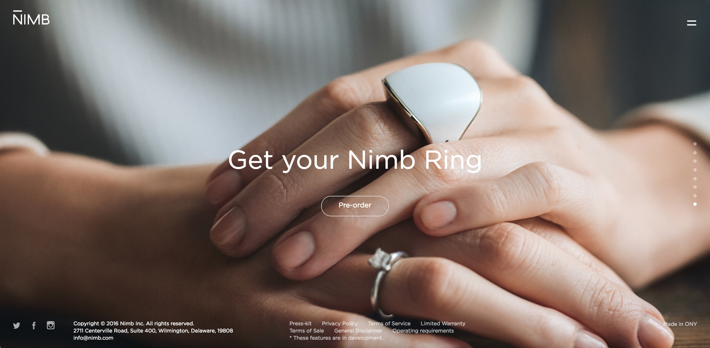
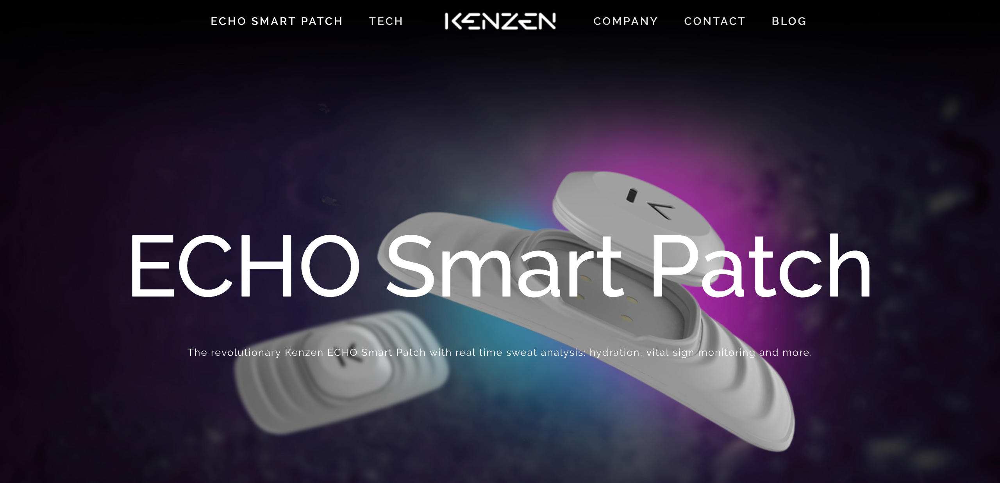
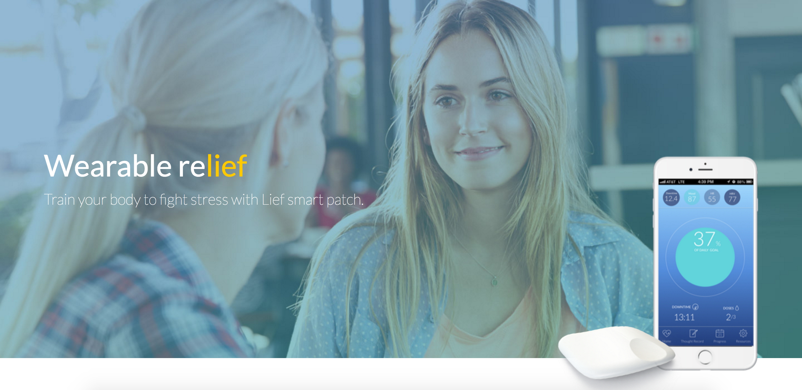
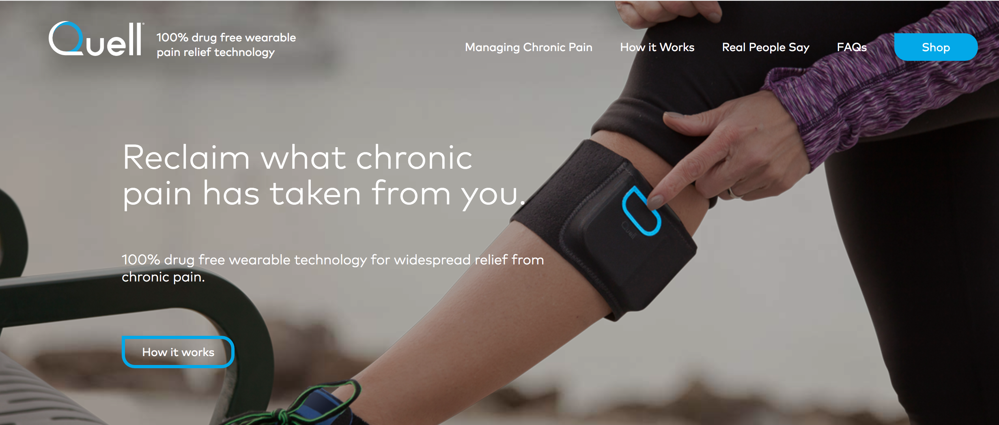

For this week, I looked more into what wearable technology has already been developed that could be of use for the elderly.
The Nimb Ring
This ring has a button that alerts friends, family, and authorities when pressed for three seconds. It could make caregivers feel more relaxed and at ease knowing that they will be contacted easily if anything goes wrong. It retails at $149, but the pre-sale is at $129.
Echo Labs
The wristband monitors the levels of different gases in the blood using light. The company is still working on how to identify glucose molecules in the blood. If they are successful, this wearable could help the elderly keep track of their blood content without the need for needles or going to the doctor's.
ECHO Smart Patch by Kenzen
Unlike the two previously mentioned wearables, this one is not worn around the wrist or finger: it is stuck directly to the skin. It analyses sweat content. While this is more targeted towards athletes, it is another way to track the body.
Lief
This is another discreet device stuck to the skin. It monitors the wearer's heartbeat and is marketed as a means to help with stress and anxiety. However, it could also help people with cardiovascular difficulties. Two models are currently available for pre-sale: Lief Smart Patch ($299) and Lief Pro ($399)
Quell
People suffering of chronic pain could benefit greatly from this drug-free product. It stimulates sensory nerves in order to block pain signals. It is sold for $249.
There is room for much more development in the wearables area, which I believe will happen fast. For now many wearables are in their first models, and are still too expensive for a large audience. Technical difficulties such as size or batteries are still in the way of more developments, but advances are made. For example, a group of researchers at the Academy of Scientific and Innovative Research in New Delhi, India, have found that using green tea extract could be a solution to powering soft wearable electronics. (source)